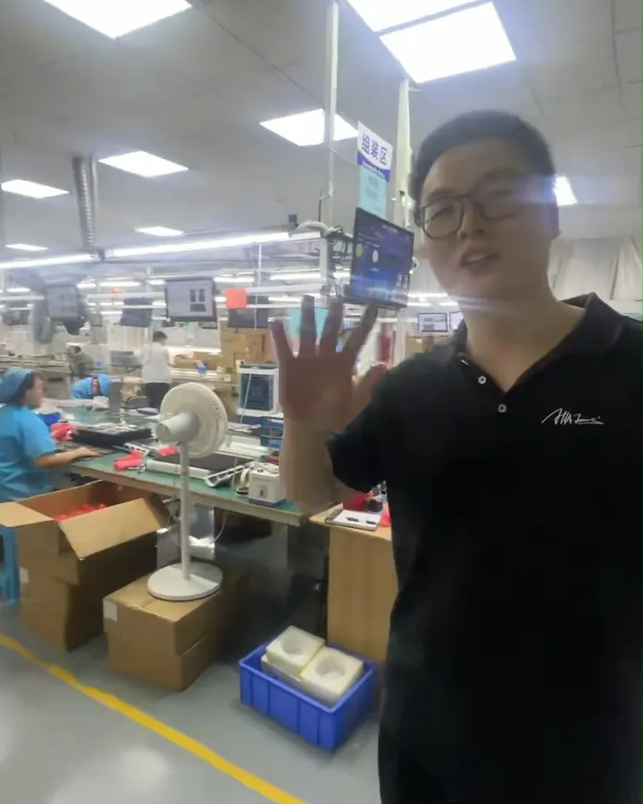
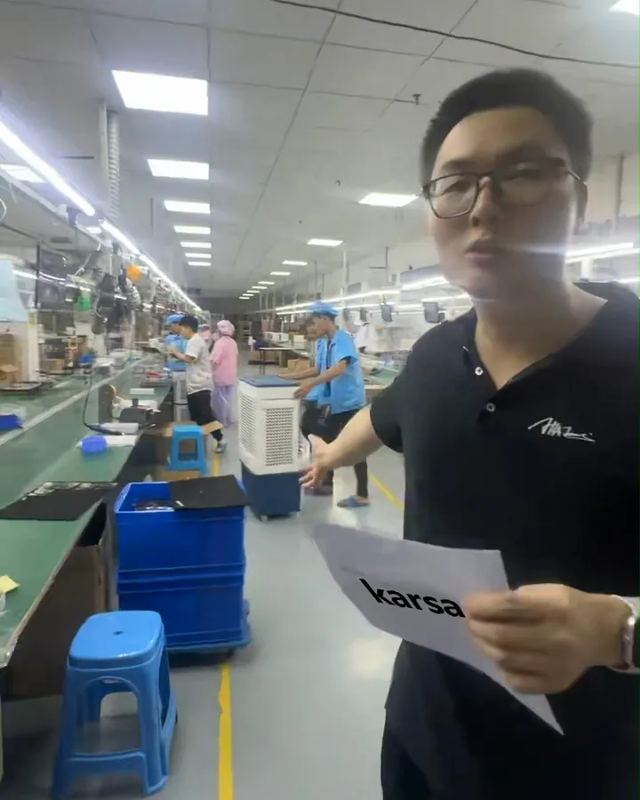
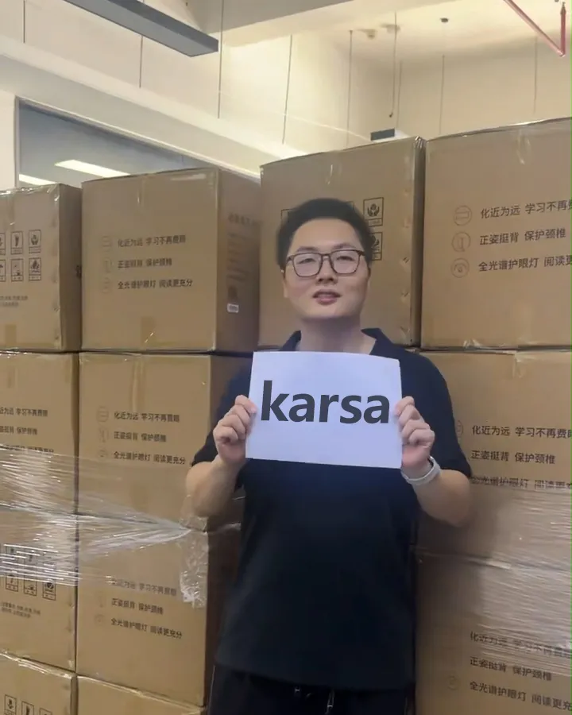
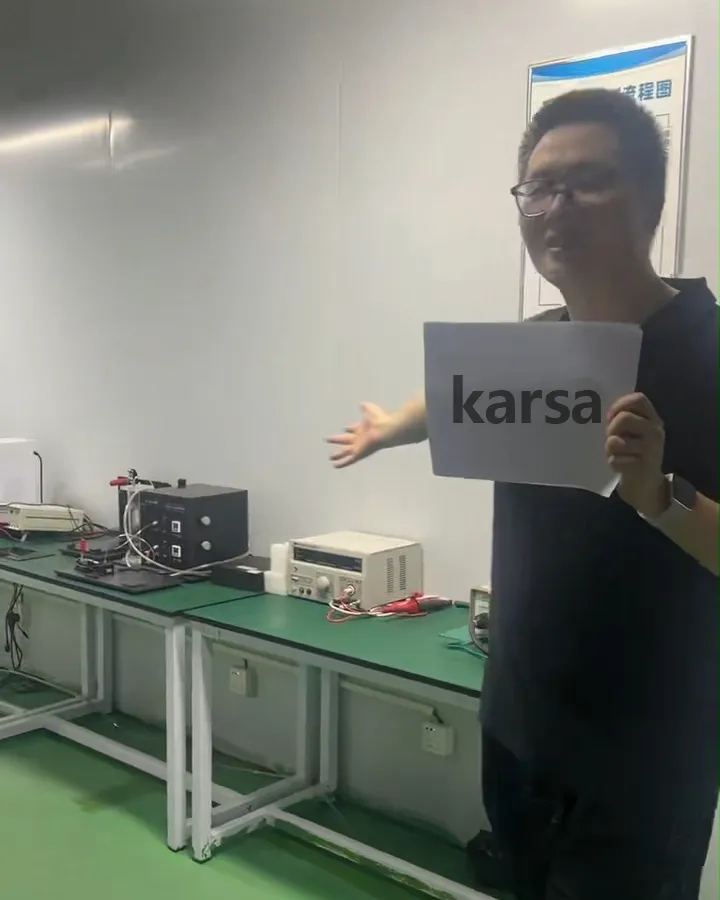

01 Why Pre-Shipment Inspection Is Non-Negotiable
Most quality problems discovered after arrival in your home country share one thing in common: they could have been caught — and fixed — at the factory before the goods ever left China.
Pre-shipment inspection (PSI) is your last line of defense. It's the moment when an independent set of eyes physically checks your goods against your specifications, before the balance payment is released and before the container is sealed.
- Cost to fix a problem in China: Usually $0–$500 (factory corrects it on-site)
- Cost to fix the same problem after arrival: $5,000–$50,000+ (returns, rework, replacement shipments)
- Cost to your reputation: Immeasurable — negative reviews, refund demands, lost customers
02 Step 1: Production Line Check
Before products are finished and boxed, a walk through the active production line gives you critical insight into how your goods are actually being made — not just how they look in the final sample.

Active production line during a client order — checking worker processes and material quality at each workstation.

In-process quality check at multiple production stages — catching defects before they are built into the finished product.
What to verify on the production line:
- Are the materials being used matching your approved sample specs? (Grade of steel, type of fabric, thickness of plastic, etc.)
- Are workers following the agreed production process, or cutting corners?
- Are in-process defects being caught and removed — or passed along?
- Is the production volume on track to meet your delivery deadline?
- Are there any unauthorized material substitutions since your sample was approved?
03 Step 2: Goods & Warehouse Inspection
Once production is complete and goods are staged in the warehouse ready for loading, a thorough physical inspection of finished goods is essential. This is where quantity verification, packaging review, and random sampling all happen.

Finished goods staged and ready for shipment — random sampling, quantity count, and packaging check in progress before loading approval.
Warehouse inspection checklist:
- Quantity Count: Verify the total number of units matches your purchase order exactly — before and after carton counts
- Random Sampling: Pull cartons at random from different pallet positions. Do not allow the factory to select which boxes you inspect
- Packaging Integrity: Check that cartons are the correct size, properly sealed, and protected with inner packaging (foam, bubble wrap, dividers)
- Labeling Accuracy: Verify barcodes, SKU labels, country of origin markings, and any compliance labels (CE, FCC, etc.) are correct and properly applied
- Carton Drop Test: Drop one carton from each production batch at realistic height to verify packaging can handle transit stress
- Shipping Marks: Confirm shipping marks match your purchase order reference numbers, destination details, and any customs requirements
04 Step 3: The QC Room — Final Quality Verification
The QC room is where detailed product-level inspection happens. Selected samples from the warehouse are brought in, tested against your specifications, and documented with photos and measurements. This is the most critical stage of the inspection process.

Inside our quality control room — each sampled product is checked against original specifications, with measurements, function tests, and photo documentation recorded for the client report.
QC room inspection covers:
📐 Dimensional Verification
Measure key dimensions against your approved specs or technical drawings. Check tolerances — even small deviations can cause assembly or fitting problems at your end.
🎨 Appearance & Finish
Check surface finish, color consistency, texture, and any printing or coating quality. Look for scratches, dents, bubbles, uneven coating, or color deviation from the approved sample.
⚙️ Functional Testing
Test that the product works as intended. Switches turn on/off, zippers run smoothly, locks engage, assemblies fit together — every function that the end user will rely on.
🧱 Material Verification
Confirm materials match your specification — metal gauge, fabric weight, plastic grade, glass thickness. Request material certificates for orders where compliance is critical.
🏷️ Label & Compliance Check
Verify all required labels, safety markings, certifications, and instructions are correctly printed, positioned, and readable. Errors here can cause customs rejection.
📦 Inner Packaging
Check retail packaging quality — print accuracy, structure, product fit, and protection level. Damaged or incorrect packaging is one of the most common reasons for customer returns.
05 Complete Pre-Shipment Checklist
Here's the full inspection checklist we use before approving any shipment for our clients. Print this, save it, and use it for every order — or send it to your sourcing agent as the minimum standard you expect:
✅ Production Line Checks
☐ Materials match approved sample spec
☐ No unauthorized material substitutions
☐ Workers following agreed process
☐ In-process defects being removed
☐ Production quantity on schedule
✅ Quantity & Packaging
☐ Total unit count matches PO
☐ Carton count matches packing list
☐ Random carton selection (not factory-picked)
☐ Packaging materials match spec
☐ Carton drop test passed
✅ Product Quality (QC Room)
☐ Dimensions within tolerance
☐ Surface finish acceptable
☐ Color matches approved sample
☐ Functional tests passed
☐ Materials verified
✅ Labels & Compliance
☐ Barcodes scan correctly
☐ SKU labels accurate
☐ Country of origin marked
☐ Compliance marks present (CE/FCC/etc.)
☐ Shipping marks match PO
✅ Documentation
☐ Packing list matches physical count
☐ Commercial invoice details correct
☐ Certificate of origin ready (if needed)
☐ Material certificates available
☐ Inspection photos taken & recorded
✅ Final Approval
☐ Defect rate within AQL 2.5 tolerance
☐ All critical defects resolved
☐ Client inspection report reviewed
☐ Balance payment released only after pass
☐ Loading authorized in writing
06 When to Inspect and Who Should Do It
Timing and independence are the two most critical factors in effective QC inspection.
During Production (IPC)
In-Process Check at 30–50% production completion. Ideal for large orders where catching issues early saves rework cost and prevents entire batches from being defective.
Before Shipment (PSI)
The most common inspection point. Conducted when 80–100% of goods are finished and packed. This is the standard minimum for any import order from China.
Loading Supervision (LSP)
An agent supervises the container loading to verify all approved goods are loaded, the container is sealed correctly, and the seal number is documented.
Who should conduct the inspection?
- Your sourcing agent (recommended): An agent already on the ground in China who knows your products and supplier — fastest and most cost-effective for routine orders
- Third-party inspection company: SGS, Bureau Veritas, Intertek, or similar — independent certified inspectors, ideal for high-value or high-risk orders
- The factory itself (NOT recommended): Self-inspection by the supplier is a conflict of interest. They will not report defects that would delay payment or require them to rework production
07 Never Skip Inspection — Let Us Handle It
Pre-shipment inspection is the single most cost-effective step in any China import process. A few hundred dollars spent on a thorough QC check can save tens of thousands in returns, replacements, and damaged customer relationships.
At Youna Global, we conduct pre-shipment inspection as a standard part of our sourcing service — not an optional add-on:
- ✓ We visit the factory in person, not just call them on the phone
- ✓ We check the production line, warehouse goods, and QC room — all three stages
- ✓ We document every inspection with detailed photos and a written report sent to you before any balance payment is authorized
- ✓ We negotiate defect corrections on your behalf when issues are found — at no extra cost
- ✓ We only approve loading when goods meet your specifications. Period.
You're running a business. Your time, your money, and your customers' trust deserve better than hoping a factory does the right thing. Let us be your eyes on the ground.
Find Us on Social Media
Follow Karsa for sourcing tips, product updates, and factory insights from China.